DASHBOARDS
- 1 Introducción
- 2 Editor
- 3 Visor
1. Introducción
Los dashboards nos permitirán crear cuadros de mando en los que agruparemos el resto de documentos de manera que podamos visualizarles al mismo tiempo en forma tabular.
Se pueden crear desde la sección de accesos directos. Al pulsar en esta opción se nos abrirá un nuevo dashboard.
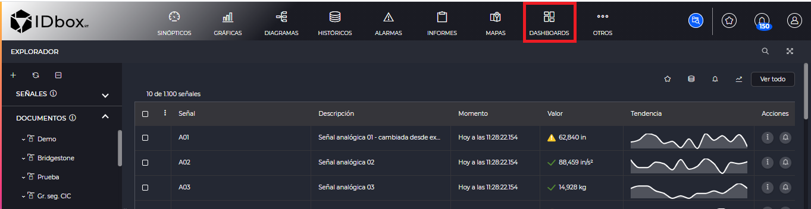
2 Editor
El editor de dashboards consiste en una rejilla que nos permitirá añadir elementos a un dashboard, eliminarles o modificarles.
Mediante el botón guardar de la barra de herramientas podremos guardar el dashboard una vez editado.
2.1 Añadir y eliminar elementos
Para añadir un elemento pulsaremos sobre el botón de + de dashboards.
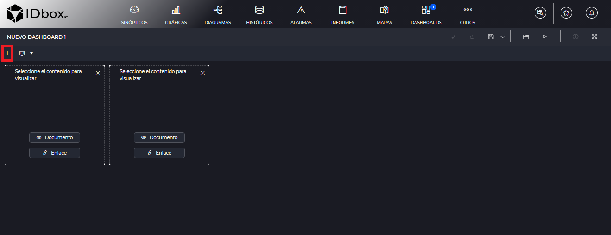
Esto nos agregará un elemento vacío a la rejilla del dashboard. En estos elementos podremos asignar visores de documentos o enlaces a los documentos. Como se visualiza cada uno de estos elementos al visor de documento se detalla en la sección visor.
Para añadir un documento específico al dashboard pulsaremos en el botón “Documento” en ese elemento.
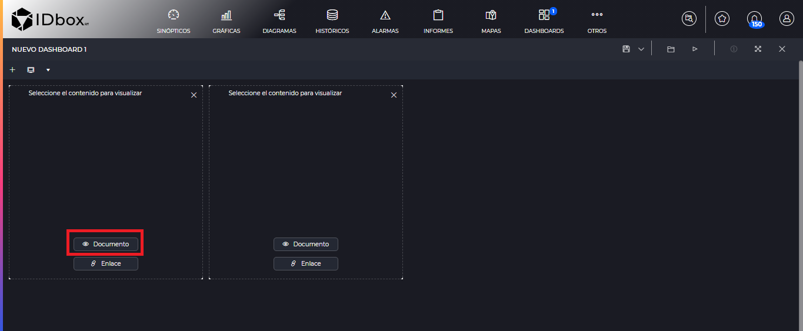
Esto nos abrirá el selector de documentos para seleccionar el documento que queremos añadir.
Para añadir un enlace a un documento pulsaremos en el botón “Enlace”
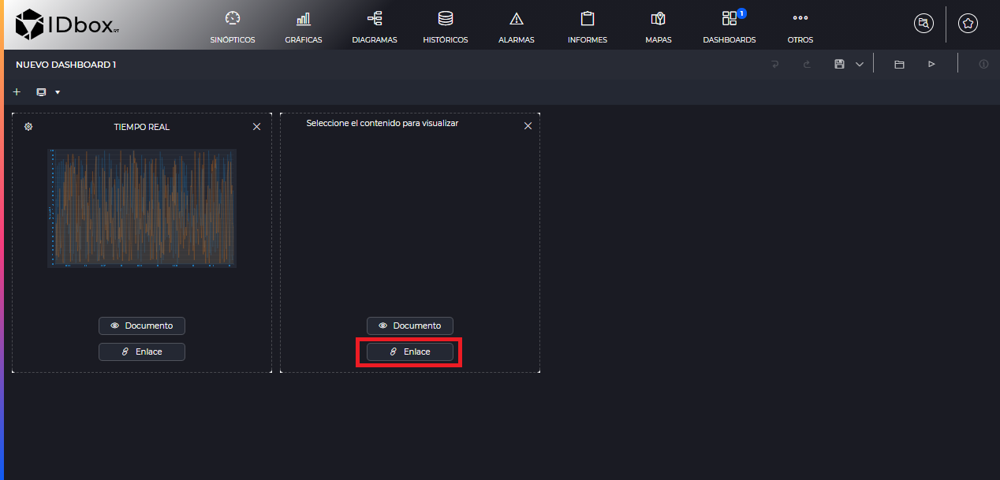
También nos abrirá el selector de documentos para seleccionar el documento al cual queremos enlazar.
Para eliminar un elemento del dashboard pulsaremos sobre el aspa del elemento.
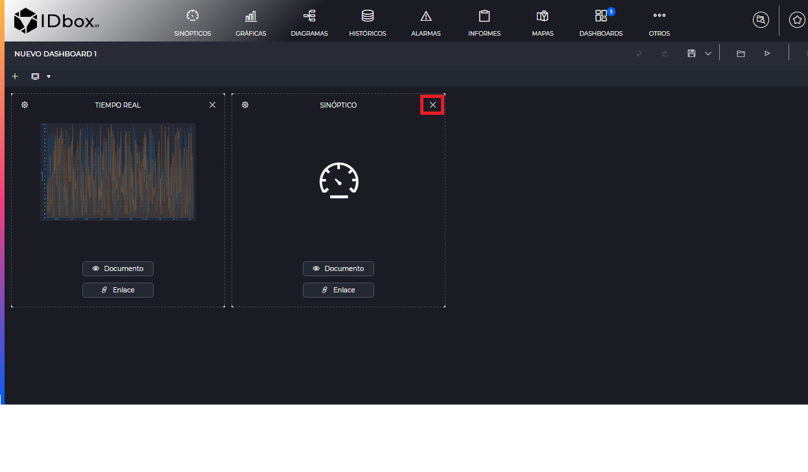
2.2 Mover y redimensionar elementos
Podemos pinchar en un elemento y mantener pulsado para arrastrarle a otro lugar de la rejilla. Se indica en un color más oscuro el lugar donde se posicionará el dashboard en el momento que se suelte el click izquierdo. Además si hay otros elementos en el camino, estos se moverán automáticamente para dejar espacio al nuevo elemento.
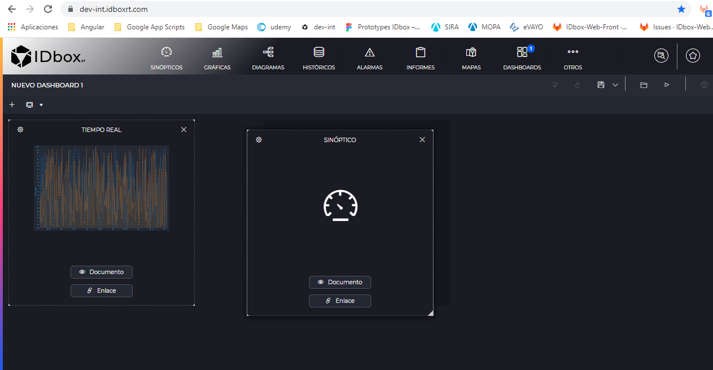
Además podremos redimensionar un elemento, pulsando y arrastrando desde la esquina inferior derecha del elemento. Al igual que al mover elementos, se nos mostrará en un color oscuro hasta donde redimensionará el elemento y la redimensión nos moverá automáticamente los elementos que haya en su camino.
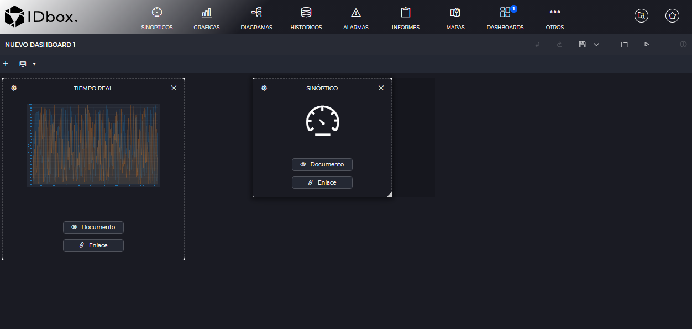
2.3 Opciones de configuración
Pulsaremos sobre el botón de configuración en un elemento y se nos abrirá un panel derecho con las opciones que podemos modificarle.
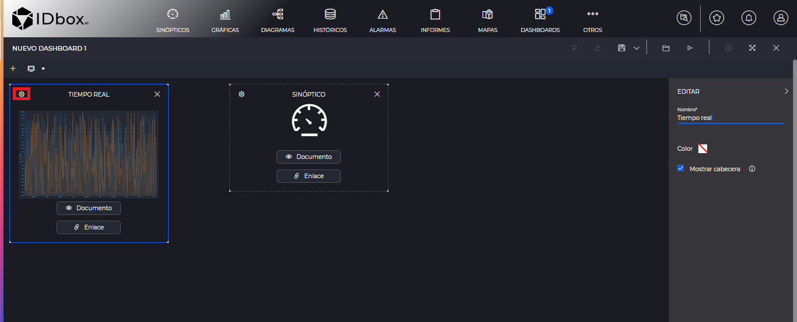
Las opciones son las siguientes:
- Título: Podremos modificar el título del elemento, que por defecto será el del documento al que hace referencia.
- Color: Tendremos la opción de modificar el color del elemento. En el caso de un visor de documentos, nos modificará el color de la cabecera. En el caso de un enlace se modificará el color de todo el elemento.
- Mostrar cabecera: Si desmarcamos este checkbox, no se mostrará la cabecera con el título del documento. Hay que tener en cuenta que si hacemos esto perderemos el acceso al enlace del documento cuando estemos en el visor, si el elemento es un visor en lugar de un enlace.
- Tiempo de refresco: Servirá para refrescar el documento automáticamente. Indicaremos periodo de refresco. Esta opción sólo está disponible en históricos, alarmas y gráficas (no las de tiempo real, ya que por su naturaleza son refrescadas automáticamente).
Además también podremos hacer renombrado rápido de elementos sin necesidad de abrir el panel derecho, simplemente pulsando sobre el título del elemento en la propia caja.
2.4 Tipos de vistas
Dado que un dashboard puede preferir verse con distinto tamaño o distribución en un dispositivo móvil, se definen las siguientes vistas:
- Vista Web/Tablet: Se refiere a la configuración que tendrá el dashboard para su visualización en la web o en una tablet que tenga la aplicación móvil de IDbox.
- Vista Móvil: Visualización que tendrá el dashboard en un smartphone que tenga la aplicación móvil de IDbox.
Si pulsamos en el desplegable de tipos de vistas, veremos estas opciones:
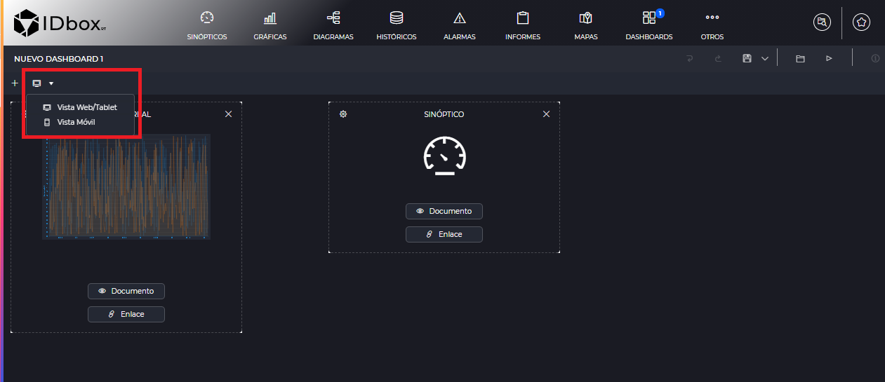
Los dashboard tanto en móvil como en web tendrán los mismos elementos. Para la vista móvil, la ventana será más pequeña, como si fuese un dispositivo móvil:
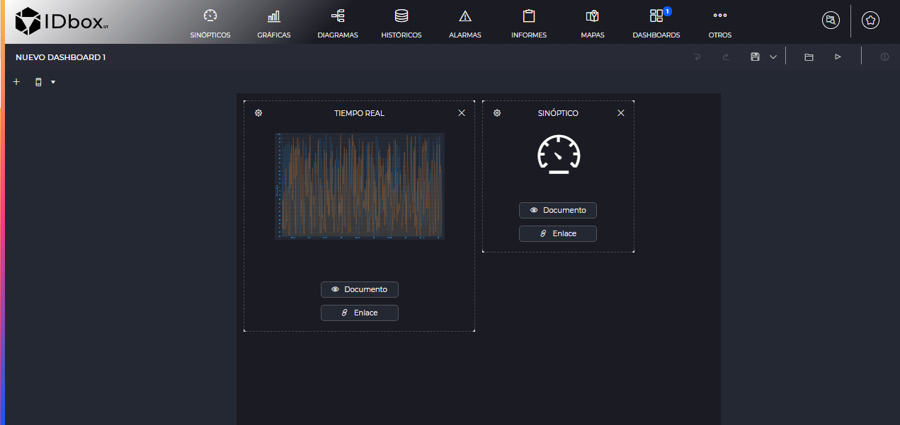
3 Visor
A la hora de abrir un documento de tipo dashboard o pulsar en el botón de “Vista Previa” de la barra de herramientas del editor. Visualizaremos el dashboard en modo visor, con los elementos que hayamos puesto y su configuración.
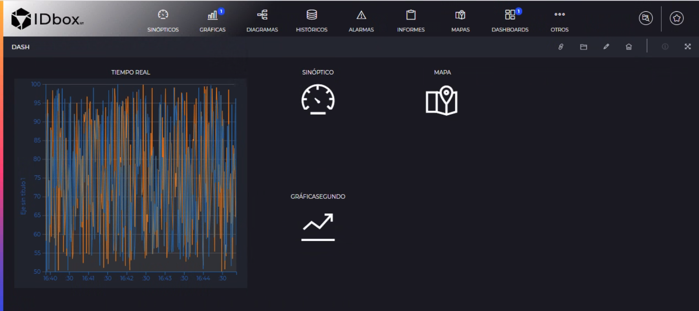
Cabe destacar como se visualizarán los diferentes tipos de elementos que puede tener el dashboard:
- Los elementos de dashboard vacíos se visualizarán con un hueco como si no hubiese elemento.
- Los elementos de tipo documento visualizarán el visor del documento en la región especificada.
- Los documentos de tipo enlace nos crearán un botón que al pinchar en él nos abrirá el documento.